IOT
Robot ou ordinateur
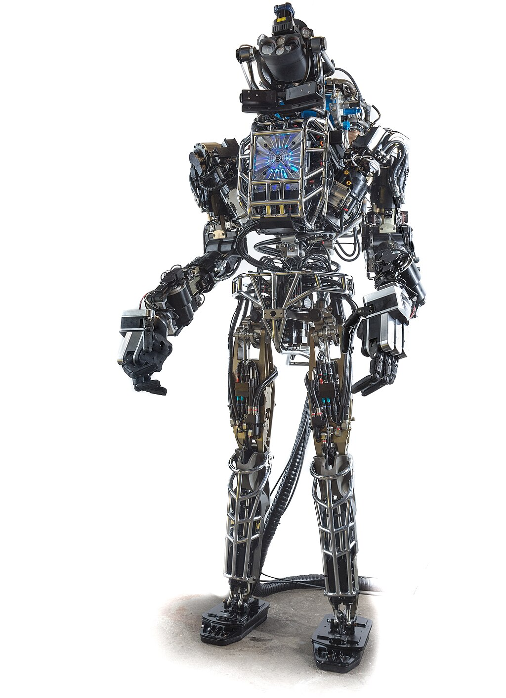
Atlas (2013), robot androïde de Boston Dynamics. Wikipedia.
Le terme robot est issu des langues slaves et formé à partir du radical rabot, rabota (работа en russe) qui signifie travail, corvée que l’on retrouve dans le mot Rab (раб), esclave en russe. wiki.
Les robots sont utilisés pour des tâches qu’ils remplissent mieux que les humains. Il peut s’agir d’un travail répétitif, d’une tâche de haute précision, ou d’une activité dans un milieu hostile.
Dans l’antiquité: Le mythe de Pygmalion racontait déjà comment la statue Galatée devint vivante et s’affranchit de son créateur afin de partir à la conquête du monde des hommes.
A la Renaissance, Le premier exemple d’un robot de forme humaine fut donné par Léonard de Vinci en 1495. Ses notes à ce sujet recelaient des croquis montrant un cavalier muni d’une armure qui avait la possibilité de se lever, bouger ses membres.
La litterature de science fiction du XIXe et XXe regorge d’exemples, mettant en scène des robots. Une oeuvre majeure est celle de Isaac Asimov: Les Robots (1950), dans laquelle il énonce les 3 lois de la robotique. Ces trois lois forment un principe d’organisation, qui donne un cadre aux différentes nouvelles.
Les premieres machines autonomes, capables d’interagir avec l’homme apparaissent dans les années 1980.
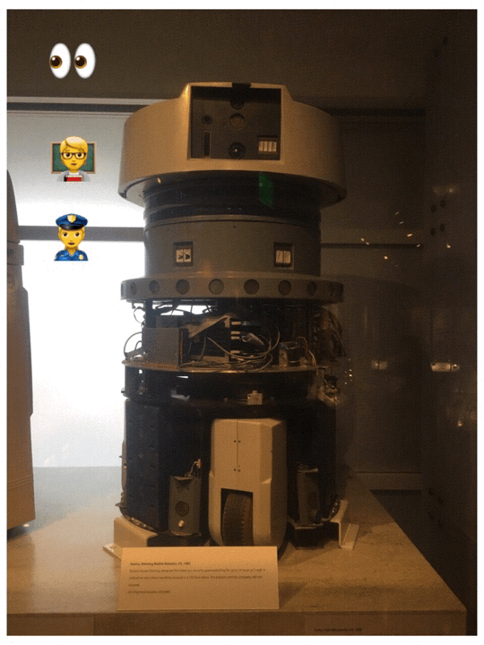
Computer History Museum, San José, CA
Les robots ne sont pas de simples automates: ils ont la capacité de s’adapter à leur environnement dans leurs déplacements et leurs actions. Ils analysent leur environnement pour réagir par le biais de capteurs et de programmes. Ils peuvent réagir à des situations imprévues (piece defectueuse, obstacle).
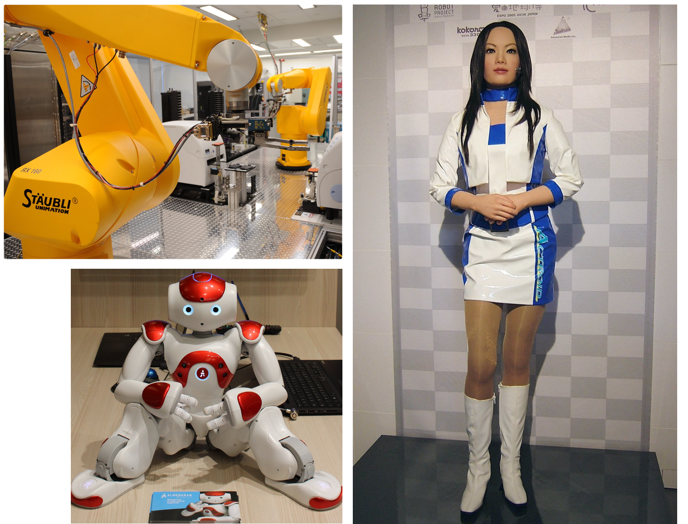
Diversité des robots actuels. Wikipedia.
Definition: Un robot est une machine possédant un processeur, une mémoire, des interfaces d’entrée et de sortie, et qui capable d’exécuter des programmes. C’est aussi la définition d’un ordinateur. La différence se situe avec la nature des capteurs et actionneurs que possède le robot, ce qui lui donne une action autonome, en temps réel et remplace souvent une activité humaine.
On distingue parmi les extensions de la machine-robot, celles qui sont commandées (ACTIONNEURS) de celles qui numérisent une grandeur physique (CAPTEURS)
C’est alors un programme, écrit en langage informatique, qui va traiter les données et commander la machine-robot, lui donnant un comportement autonome, en temps réel.
Son comportement peut aussi être commandé par une autre machine, dans un système informatique disttribué.
Description d’un système automatisé
Le système automatisé comprend les sous-parties du robot, les interfaces, les machines utiles pour le traitement, les sources d’énergie.
Par exemple: caméra, moteur, relais électrodynamique, batterie, lampes, roues, antenne radio, écran, ordinateur serveur, client, commutateur, …
Premier exemple: robots agricoles
Comment le robot s’inscrit-il dans un système informatique complet?
- il utilise la reconnaissance de formes et de couleurs
- analyse, déclenche une action en rapport avec cette mesure
- Utilise une source d’énergie adaptée, qui les rend autonome
- communique sur le reseau (internet)
- echange avec un logiciel (IHM)
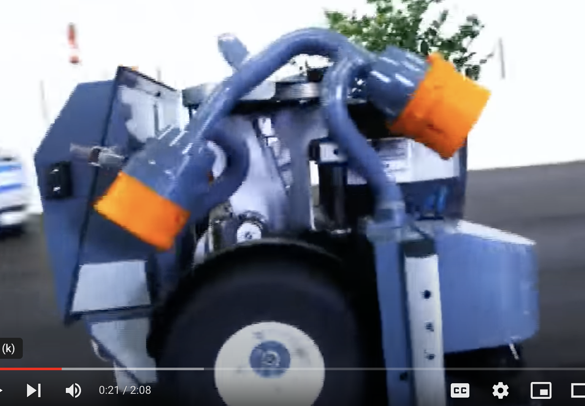
Exemple 1
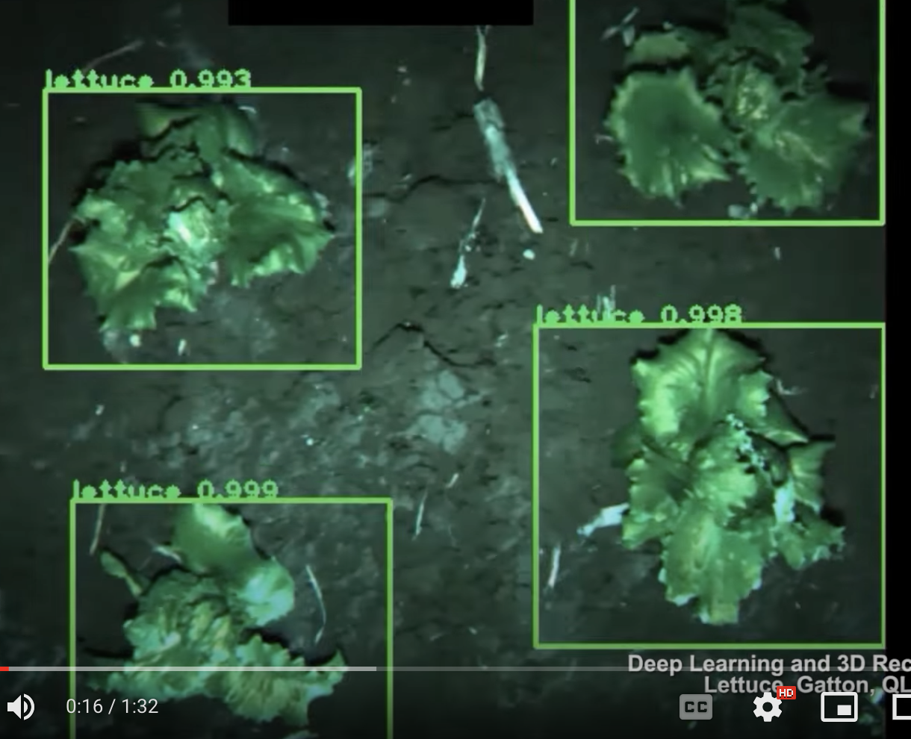
Exemple 2
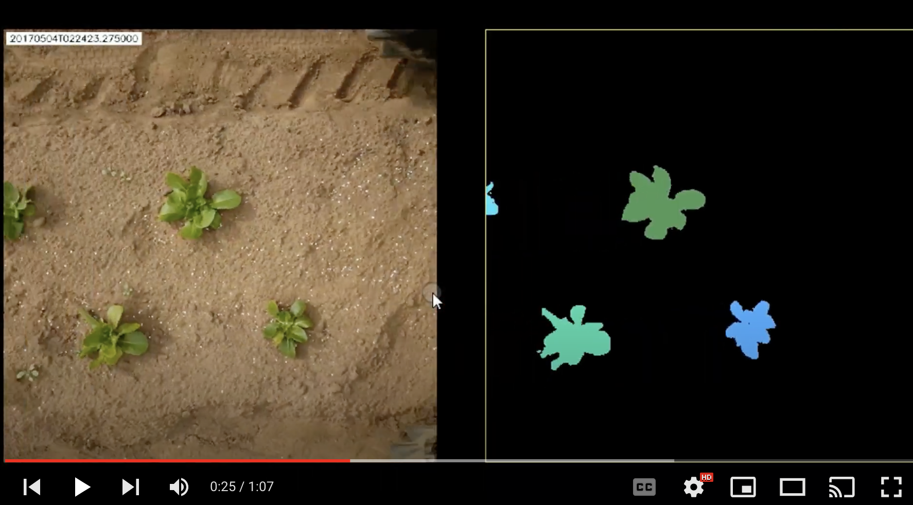
Exemple 3
voitures autonomes
En test à San Francisco actuellement, les taxis autonomes.

Jaguar électriques I-PACE Waymo One: taxi autonome
On peut représenter les sous-parties de ce système informatique avec les chaines d’information et d’énergie.
Chaine d’information et chaine d’énergie
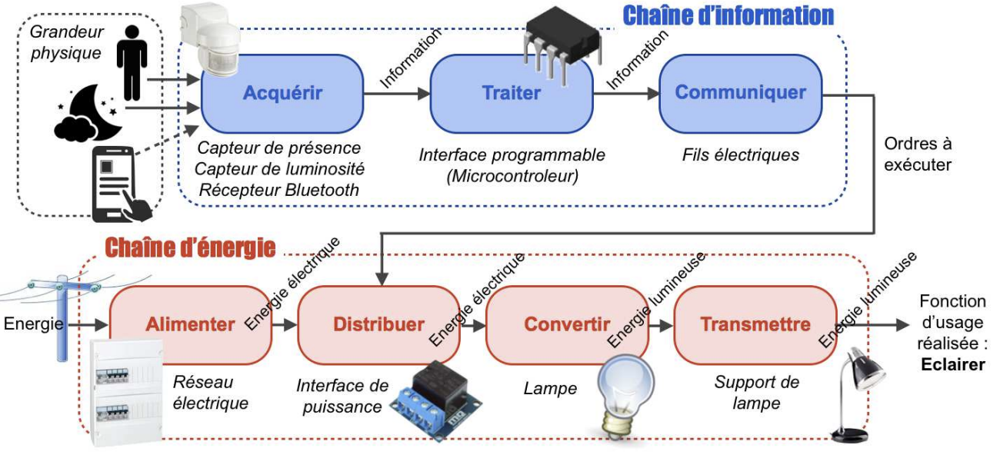
Chaine d'information et chaine d'énergie, structure des systèmes
Chaine d’information
La chaine d’informations permet de transmettre entre différentes parties et traiter les données au niveau d’une machine.
Décrire la chaine d’information revient à placer les verbes ACQUERIR, TRAITER LES DONNEES, COMMUNIQUER dans un diagramme d’activité:
Camera -> ACQUERIR (images) -> TRAITER LES DONNEES (microcontroleur) -> COMMUNIQUER (antenne radio, interface de communication) -> stockage et traitement (serveur) ou bien : Camera -> ACQUERIR (images) -> TRAITER LES DONNEES (microcontroleur) -> COMMUNIQUER -> actionneur
Chaine d’énergie
La chaine d’énergie montre l’utilisation des différents capteurs et actionneurs, et la nature du travail (mécanique, électrique, lumineux) qui est mis en jeu.
Décrire la chaine d’information revient à placer les verbes ALIMENTER, DISTRIBUER, CONVERTIR TRANSMETTRE dans un diagramme d’activité:
Les robots et microcontrôleurs doivent souvent avoir une alimentation autonome, qui doit durer le plus longtemps possible. Il faut alors optimiser leur consommation électrique.
Bilan: robot ou objet connecté
La diversité de machines, et leur interaction, montre que le robot fait partie d’une plus grande famille d’objets, dont l’enjeu dépasse aujourd’hui le simple fait d’agir de manière autonome. Ce sont aussi et surtout des objets connectés, en reseau.
On parlera plus d’objets connectés que de robots.
Informatique et internet des objets
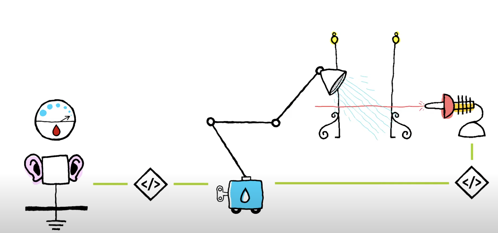
Video du mooc SNT sur IOT
A partir de la video: citer un ou des capteurs, actionneurs, un exemple de programme. Qu’est-ce qu’un objet connecté?
Constitution d’un objet connecté
Un objet connecté a une fonction: il est prévu pour réaliser certaines tâches en rapport avec la mission qu’il doit accomplir.
Un objet connecté est muni de:
- Capteur: transformation d’une mesure physique en un signal électrique.
- Actionneur: transformation d’un signal electrique en un moyen physique
- Processeur: pour un traitement local des données, plus ou moins complexe
- Source d’énergie: adaptée à la fonction
- Moyen de communication: du codage à la transmission des données selon des protocoles standards ou dédiés.
Enfin, l’objet peut disposer également d’une IHM (interface homme-machine), souvent par l’intermédiaire d’une application.
Définition d’un objet connecté
Définitions d’un objet connecté et de l’Internet des Objets (IdO), ou Internet of Things (IOT):
Un objet connecté dispose de tout ou partie des caractéristiques d’un robot, mais surtout, fait partie d’un système informatique à plusieurs machines, reliées au réseau internet.
Les fonctions sont alors reparties sur l’ensemble de ces machines, et il peut arriver que le programme ne soit pas dans l’objet lui-même, mais dans une autre machine du système (le client, le serveur…)
Enfin, grâce à la connexion internet, la communication peut se faire entre appareils eux-mêmes, ou entre appareils et le Cloud.
- Les objets connectés sont donc des objets physiques connectés ayant leur propre identité numérique et capables de communiquer les uns avec les autres.
Un objet connecté a deux rôles principaux:
- La collecte de données issues de son univers (surveillance)
- Un seuil d’ action: selon les données recueillies et communiquées. Ainsi, par exemple, déclencher l’arrosage du gazon lorsque la chaleur externe est trop élevée.
Etude de quelques exemples d’objets connectés du quotidien: SNT, Lycee Lafayette Brioude
Retrouver tous les constituants de l’objet connecté à partir de l’un des exemples proposés.
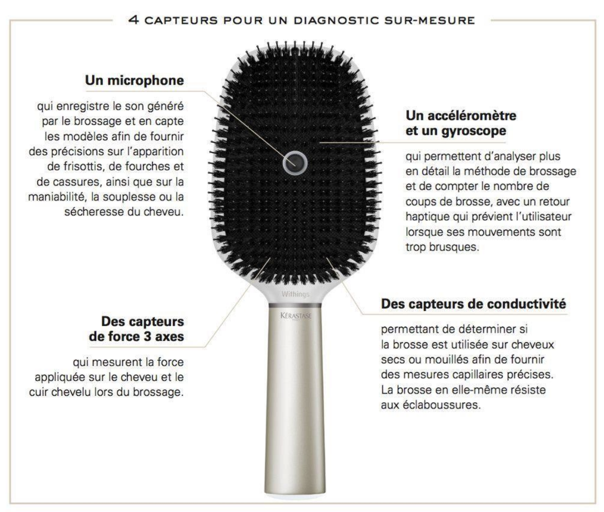
Exemple 3
A quoi servent-ils?
Un objet connecté a une fonction: il est prévu pour réaliser certaines tâches en rapport avec la mission qu’il doit accomplir.
les objets connectés proposent un certain degré de commodité dans notre quotidien. Grâce à cet objet, nous pouvons gagner beaucoup de temps et parfois d’énergie. L’idO est employé dans différents domaines d’activité.
Vous les trouvez partout, de la machine à café aux jouets pour enfants: TOUT est susceptible de se transformer en IOT!
La collecte des données en temps réel offre beaucoup de potentiel:
- l’automatisation à partir de ces données
- une gestion à distance
- un historique qui peut être analysé
Par ailleurs, l’Internet des objets vise à relever différents challenges majeurs actuels et futurs. page eurotechconseil.com:
- Les smart-cities: pilotent le flux de circulation ou les illuminations en temps réel en fonction de l’heure de la journée. Une telle avancée technologique permet de régler certains des problèmes de saturation des centres-villes et de la pollution par la lumière, et de réduire les émissions de CO2.
- transports publics: plusieurs capteurs existent pour diffuser des informations précieuses ainsi que pour réguler la circulation et renseigner les passagers en temps réel.
- Dans les secteurs industriel et agricoles, l’idO augmente la productivité: surveillance des cultures et analyse du sol, arrosage intelligent, suivi distant de cheptel.
- Aquaculture: station météo sous-marine avec surveillance de la qualité des eaux, détection de la pollution ou de contamination.
- Domotique: thermostat intelligent, électroménager connecté, alarme connectée, pilotage de l’éclairage, des stores…
- Santé: paire de lunette connectée pour une personne en situation d’handicap, peut fournir des informations sur les lieux alentour, bracelet connecté pour les personnes sourdes (envoi d’une impulsion selon l’activité ou les messages perçus), mesure du rythme cardiaque
- Loisirs: balises GPS de géolocalisation de randonneurs, drones pour filmer defense: drones de combat
Il peut donc exister autant d’objets connectés qu’il existe d’activités humaines.
Un objet connecté dans le reseau internet
modèle Client-serveur
La communication entre un objet connecté et sa plateforme est du type client-serveur.
Comme toute machine sur internet, un objet est identifié par son adresse IP. Dans son réseau, le canal de communication privilégié sera le Wi-Fi, le Bluetooth, la puce RFID…
Le programme et les données: souvent, le programme n’est pas dans l’objet, mais dans le serveur prévu. L’utilisation du serveur necessite souvent de renseigner des informations personnelles lorsque l’on utilise un service connecté. Cela peut poser un problème sur la protection et l’usage de ces données.
Les IOT sont-ils particulièrement vulnérables?
On a vu que la communication entre Client et Serveur sur internet doit être authentifiée, que les données doivent circuler sans être modifiées (intégrité), et de manière confidentielle. Ce sont les protocoles HTTP(S), IP et TCP qui assurent le transport de cette manière. Le problème est que ces objets connectés disposent de moins d’énergie qu’un ordinateur, et d’une faible bande passante. Ces protocoles sont donc adaptés pour les IOT, mais avec moins de sécurité.
Les IOT sont vulnérables, les failles de sécurité concernent:
- la force des mots de passe employés pour se connecter à l’objet, voire l’absence de mots de passe (bluetooth, wifi direct): authentification pas assez securisée.
- le wifi vulnérable, ce qui permet
- de couper l’accès au réseau pour l’IOT (probleme s’il s’agit d’une caméra de surveillance)
- de s’introduire dans le réseau, d’intercepter les données
- l’IOT peut conserver le nom des utilisateurs. Recueillir ces noms d’utilisateurs peut être utilisé pour un attaque par phishing
- l’absence de mise à jour du logiciel de l’IOT. Des failles de vulnérabilité permettent à un pirate de découvrir des ports ouverts et de prendre le contrôle de l’objet.
- La sécurité de la plateforme, du logiciel côté serveur avec sa base de données peut poser des problèmes de confidentialité des données.
Quels sont les moyens de sécuriser les IOT ?
Des normes de sécurité rigoureuses préconisent:
- l’authentification et les autorisation doivent être robustes
- le chiffrement des données entre l’IOT et la plateforme
- garantir l’intégrité des données (verification avec une fonction de hachage par exemple)
- des mises à jours régulières des logiciels, avec des correctifs réguliers de la part du constructeur
- une surveillance en temps réel pour détecter toute activité suspecte
Problème de confidentialité des données
De manière générale, les objets connectés font peser des risques en matière de vie privée avec la collecte des données. La Chine a ainsi développé un système de crédit social basé sur une surveillance généralisée de sa population (caméra et capteurs). Leur comportement est noté et les incivilités sont punies par l’abaissement de la note sociale des individus. Ceux-ci ne peuvent plus par exemple acheter un billet de train s’ils ont commis une incivilité dans les transports.
Variété des modes de communication
La plupart des IOT sont connectés sur internet via la wifi.
Certains objets, comme les cartes à puce ont une architecture et un moyen de communication différents. Ce sont des cartes en plastique d’au moins 1mm d’epaisseur.
{kind=link}
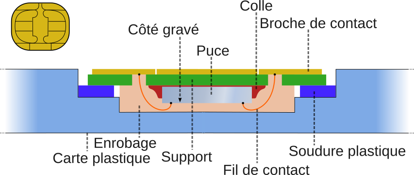
image issue de wikipedia
La carte à puce contient un circuit intégré avec, selon le modèle:
- de la mémoire flash
- de la mémoire non volatile
- un microprocesseur (pour les cartes à microcontrôleur)
Elles sont souvent utilisées comme moyen d’identification.
RFID: Radio Frequency Identification: c’est une méthode permettant de mémoriser et récupérer des données à distance. Le système est activé par un transfert d’énergie électromagnétique entre une étiquette radio et un émetteur RFID. L’étiquette radio composée d’une puce électronique et d’une antenne reçoit le signal radio émis par le lecteur lui aussi équipé d’une technologie RFID. Les composants permettent à la fois de lire et de répondre aux signaux.
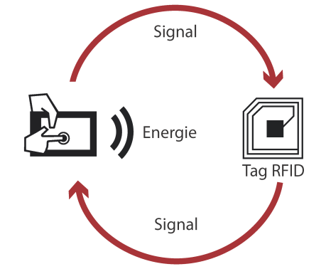
fonctionnement du RFID
L’antenne reçoit un signal électrique alternatif, émis à distance par le terminal. La puce convertit ce signal en tension continue (alimente la puce) et alternatif (horloge pour synchroniser les echanges).
On trouve cette technologie dans les puces pour animaux, clés de voiture, badges d’entrée, badge pour transport en commun… voir article sur RFID et NFC
Le programme et les données: souvent, le programme n’est pas dans l’objet, mais dans le serveur prévu. L’utilisation du serveur necessite souvent de renseigner des informations personnelles lorsque l’on utilise un service connecté. Cela peut poser un problème sur la protection et l’usage de ces données.
Une obsolescence programmée
la durée de vie de ces objets peut être écourtée indépendamment de l’usure physique de l’objet. En effet, le fonctionnement des objets connectés dépend aussi de services proposés par le fabriquant, qui peut cesser avec son activité. Ce fut le cas du lapin connecté Nabaztag lancé en 2005, qui a cessé en 2011 avec l’arrêt des serveurs de la société.
Le robot supérieur aux humains?
Ces videos virales sur Youtube. Vrai ou Faux Robot?
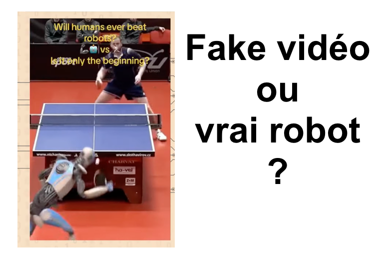
Exemple avec cette vidéo montrant un robot qui fait un superbe point contre le Polonais Pavel Sirucek
les vidéos de robotique virales nous conduisent à la prudence et à une analyse plus critique de ce que nous voyons.
Liens
- securite des IOT, Les Echos
- CNIL: il-etait-une-fois-lours-connecte-mal-securise Le piratage massif d’un ours en peluche connecté a entrainé la fuite sur internet des informations personelles de plus de 800 000 familles. (suivi de demandes de rançons)
- taxis autonomes
- cartes à puce wikipedia
- cours shoolmouv sur les IOT